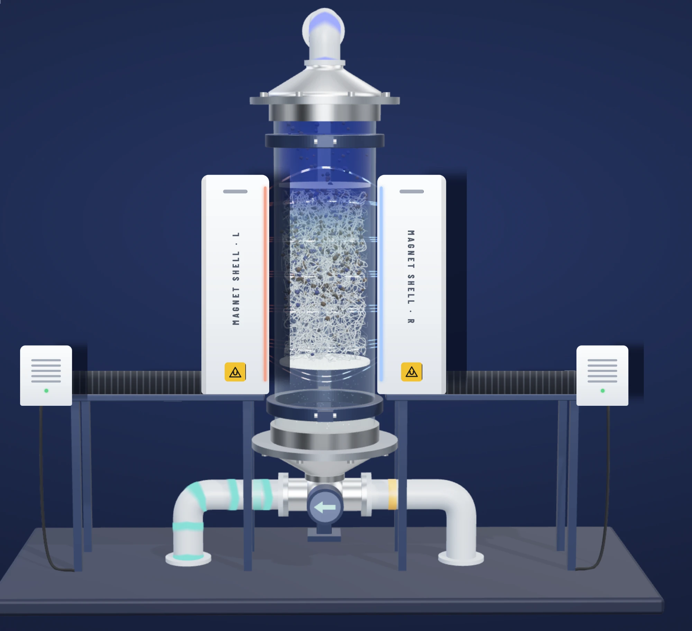
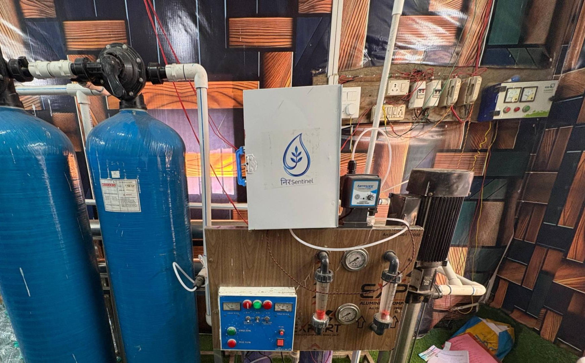
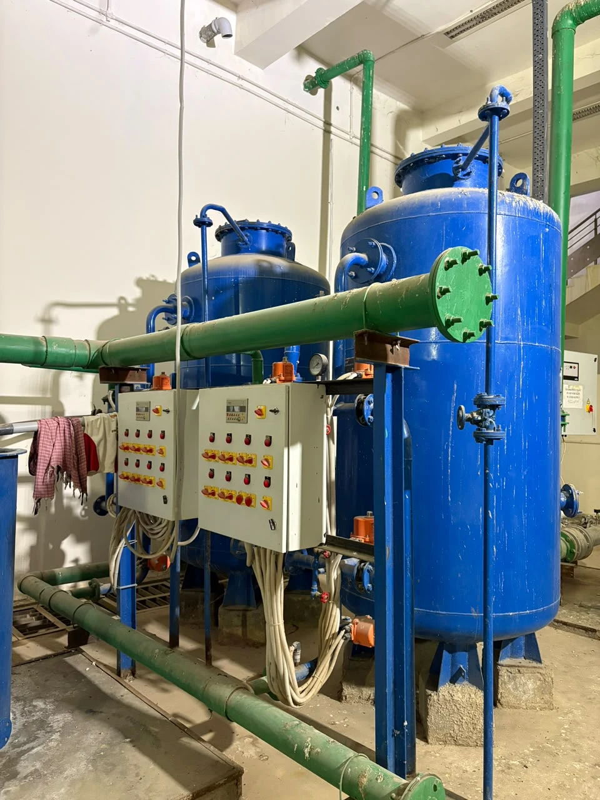

Durva Research Lab · Industrial Water Systems
The Next Generation of Industrial Water Purification.
Purify industrial effluent instantly with our revolutionary, zero-power magnetic reactor—now supercharged by autonomous intelligence. We cut wastewater treatment time by over 95% and operating costs by 75%, while shrinking your factory's environmental footprint, completely eradicating biological greenhouse gas emissions, and driving your facility straight to Net-Zero ready.
Live Process Schematic — NS-200 Unit
The Problem
The industrial water crisis, in numbers.
Lost annually to the economic cost of contaminated water
Of industrial wastewater worldwide is discharged back into the environment untreated
New emerging contaminants identified in industrial water systems since 2015
Of industrial wastewater in developing economies is discharged without any treatment
Still the average cycle time for the conventional ETPs most facilities run today
Traditional effluent treatment wasn't built for the scale the industry needs today.
Sources: World Bank, UNEP, EPA — commonly cited industry estimates
Why Factories Switch
Built for the factory floor, not the brochure.
Massive Footprint Savings
Fits in a fraction of the space required by massive concrete settling pools — reclaim that floor space for production, not sedimentation.
Zero-Power Separation Zone
Utilizes advanced horizontal permanent magnets that require 0 kWh to capture pollutants — no pumps, no grid draw, no downtime risk.
Circular Waste Model
Reduces continuous chemical purchasing by implementing a unique, recyclable filtering matrix — lower consumables spend, cycle over cycle.
Net-Zero Ready
Our magnetic reactor achieves a net-zero operational footprint by utilizing HGMS that generates zero direct carbon or greenhouse gas process emissions during the wastewater treatment cycle.
Supercharged Intelligence
Powered by next-generation automation and an onboard LLM co-pilot, our system self-regulates flow rates and chemical dosing while enabling operators to manage facility health conversationally. Continuous sensor streams feed an AI anomaly detection engine that predicts exact maintenance needs, while every compliance log and audit trail is permanently secured on a tamper-proof blockchain for absolute transparency.
Minutes, Not Hours
Our reactor achieves a 95%+ reduction in operating time by accelerating the wastewater separation process from hours down to just minutes through rapid magnetic capture.
Lower Operational Costs
A 75% reduction in total operational costs vs. a conventional chemical ETP.
Introducing Neer Sentinel
The numbers that matter on the factory floor.



Operating time reduction — cycles down from hours to minutes
Our system utilizes HGMS reactor to instantaneously extract targeted pollutants from the wastewater stream, completely eliminating the continuous electrical energy demands of traditional ETP clarification systems.
Lower overall plant electricity demand (electricity is only used in our system for the fluid pump pushing water through the tube) vs. traditional ETPs
Absolute reduction in total sludge waste volume
Reduction in total operational costs vs. a conventional chemical ETP
Reduction in total land footprint vs. a conventional treatment plant
Our system features an integrated closed-loop regeneration cycle that mechanically purges the captured pollutant sludge and chemically washes the magnetic nanoparticles, recovering them at a 95%+ efficiency rate for continuous process reuse.
Our magnetic reactor achieves a net-zero operational footprint by utilizing HGMS that generates zero direct carbon or greenhouse gas process emissions during the wastewater treatment cycle.
Eliminate manual oversight with next-generation sewage treatment plant (STP) automation that self-regulates flow rates, chemical dosing, and magnetic activation cycles in real time.
Continuous sensor streams fuel our AI anomaly detection engine, instantly spotting performance drops and pollutant spikes while forecasting exact schedules for magnetic matrix backwashing and RO membrane replacement before any degradation occurs.
Interact with your wastewater facility conversationally. Operators can query system health, generate regulatory compliance reports instantly, and receive plain-language troubleshooting guidance from an on-board AI assistant.
Secure every compliance metric, audit trail, and processing log on-chain, storing data in a tamper-proof blockchain with permanent inscription for absolute regulatory transparency and carbon-credit verification.
Direct Removal, Zero Extra Stages
Our single-stage magnetic reactor directly removes the pollutant classes below from raw wastewater through an integrated mixing and inline pH process — completely eliminating the need for independent external pre- or post-treatment systems for these pollutants.
Heavy Metals
Chromium, Lead, Cadmium, Mercury, Arsenic, Copper, Zinc, Nickel
Synthetic Dyes
Reactive, Acid, Direct, Disperse & Basic dyes
Non-Soluble Pigments
Captured directly on the magnet matrix
Microplastics & Polymers
Including suspended polymer residues
Raw Starches
Removed at the point of entry
Suspended Proteins & Fats
Captured before they reach downstream units
Other pollutant classes outside this list may still require independent post-treatment.
Estimate Your Impact
See what Neer Sentinel saves you.
Tell us your daily volume — we'll predict monthly cost, electricity demand, processing time, and land footprint across three treatment approaches.
Your Facility Input
At this volume, Neer Sentinel saves $13,500/mo and frees up 9.3 hrs/day versus a conventional chemical ETP.
Traditional ETP figures modeled from published industrial effluent-treatment energy audits and plant-footprint design guidance. Microbial fuel cell figures are modeled from peer-reviewed pilot-scale MFC studies — the technology remains largely unproven at industrial wastewater scale, and real-world results vary significantly by site and configuration. Treat all figures as planning estimates, not guarantees.
Land footprint: ETP calibrated to a 15 MLD textile CETP in Ludhiana (15,000 m²). MFC extrapolated from the most compact published pilot (1.4 m³); no full-scale MFC plant exists. Neer Sentinel figure is from our own engineering design and excludes brine-evaporator land.
See the sources behind these predictions
- How Much Electricity Does a Wastewater Treatment Plant Use — waterandwastewater.com
- Energy audit of a Vietnamese industrial wastewater treatment plant — vjol.info.vn
- Cost & land-area estimation for wastewater treatment systems — Centre for Science and Environment (India)
- Techno-economic modeling of large-scale microbial fuel cell treatment — Utah State University
- Pilot-scale microbial fuel cell energy balance study — RSC Environmental Science: Water Research & Technology
- 850L air-cathode microbial fuel cell pilot at a treatment facility — Penn State (Logan Lab)
- 15 MLD textile CETP land area (15,000 m²), Ludhiana — Punjab Pollution Control Board, NGT filing
- Land required for a 100 KLD sewage treatment plant — Netsol Water
- Stretched 1000-L microbial fuel cell footprint — HES-SO
Our Mission
"Industrial water treatment shouldn't cost the planet to clean up after the factory floor. We built Neer Sentinel to make passive, zero-power separation the default — not the exception."
— Durva Research Lab, Engineering Team
Backed By


Ready to upgrade your facility's efficiency?
Join the facilities already piloting Neer Sentinel. Leave your email and our engineering team will reach out to scope a pilot for your line.
No spam. Just a pilot scoping call from our engineering team.